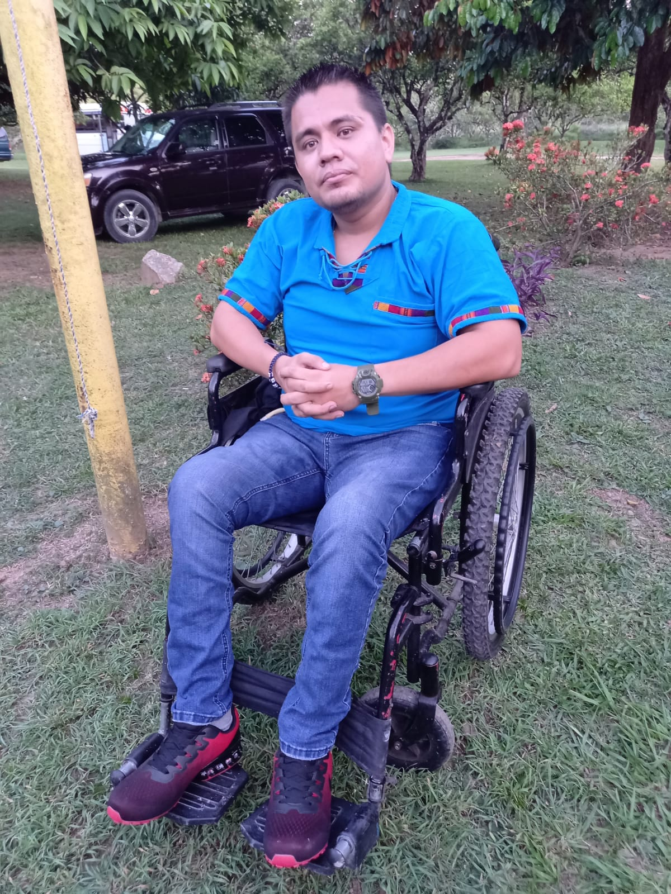
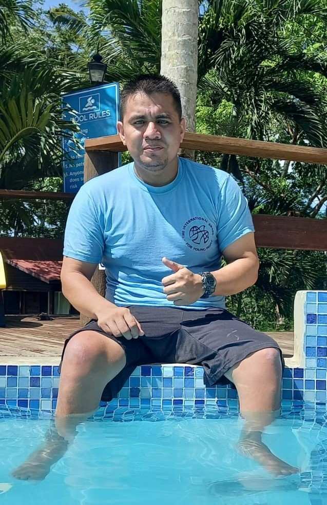

Summary of my life:
Hello there;
Borned in San Ignacio, raised in Benque Viejo, and been lived here ever since. Mount Carmel Primary School, and High School were my schools.
Unfortunatly I never went to univesrsity immediatly after high school, instead I joined the Belizean Army, BDF. I had a plan to study univesrity while working.
Things never went ass planned tho.
So after succefully finishing basic recruit training, I started to work, mostly in the jungles. It was all about fun indeed, but the salary was so minimal. One cannot survive with that salary. So getting an education is the solution to this.
There was an oportunity to study in Guyana, and I went for a whole year, not knowing that would change my life, upside down. After being there for 3 months, studing orthopedic technition, I was a victim of an armed robbry, leaving me paralysed. Secondary to four gunshot wounds. I did all my recovery in Guyana, and still completed my course succesfully.
Then I return to Belize, and continue working, this time at the Force Medical Hospital. I have addapted to my new life, but last year I decided to do my univesity despite 10 years has passed since I graduated high school. So, here I am, studying to become a computer technicion, something that I really love, especially when I have free time.
Some picture of me:


